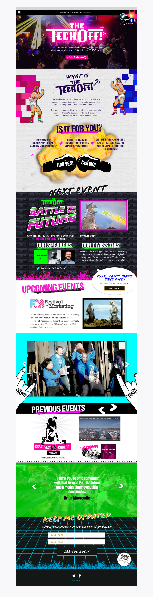

My Responsibilites
Design, regular feedback sessions with client and account manager, design iterations, development (static html).
Site Link

Working alongside TechDept Agency, the need was to make the craziest site, to match the brilliant tone of the conference. A very wide and loose brief, it was a "just go wild!" one.
Moving wrestlers, explosions, bright colours and flames - A visually appealing website with a huge message showcasing the conference. The client was delighted with the final result.
Design, regular feedback sessions with client and account manager, design iterations, development (static html).